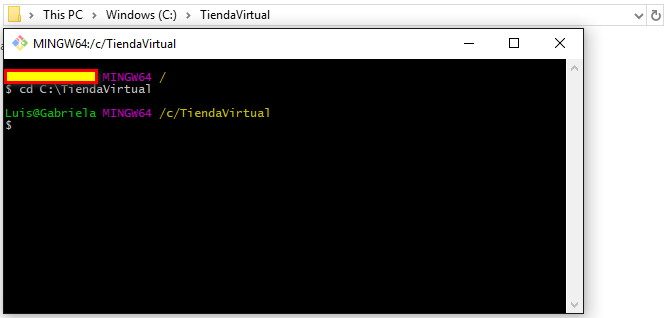

-
1. Instalar angular-cli arrow_drop_down
-
settings 1.1 Iniciar la cónsola de comandos arrow_drop_down
-
folder1.2 Crear un directorio raiz de proyecto arrow_drop_down
-
Desde la consola de comandos, navegar hasta la ruta donde se creará el proyecto. Para este ejemplo se creará el directorio raíz del proyecto en la raíz del disco duro:

C:\TiendaVirtual Generar un nuevo proyecto angular a través de un servidor de desarrollo
ng new TiendaAngular2
-
-
play_arrow1.3 Iniciar el servidor angular arrow_drop_down
En la cónsola de comandos, navegar hasta la carperta del proyecto:
cd C:/TiendaVirtual/TiendaAngular2
Verificar que la instalación del cliente Angular2 se haya realizado correctamente iniciando el servicio angular utilizando el comando:
ng serveAbrir el navegador de tu preferencia e ingresar a la página http://localhost:4200, donde 4200 es el puerto predetermindao de conexión al servidor. Si el servidor está configurado correctamente, el explorador mostrará el mensaje app works!
-
-
2. Iniciar el proyecto TiendaAngular2 arrow_drop_down
-
content_copy
2.1 Copiar el contenido de la carpeta TiendaAngular2 contenida en la carpeta del proyecto enviada Tienda_Angular2_ReactJS, dentro de la carpeta actual
arrow_drop_downC:\TiendaVirtual-
Reemplazar todo el contenido de la carpeta actual.
-
-
settings
2.2 Instalar los módulos dependientes de la aplicación TiendaAngular2
arrow_drop_down -
play 2.2 Iniciar el servidor angular arrow_drop_down
-
Si el servidor ng server se encuentra corriendo, detenerlo seleccionando la cónsola de comandos y presionar las teclas Crtl + C al mismo tiempo.
-
Con el servidor angular detenido, en la consola de comandos ejecutar el código:
ng servepara iniciar el proyecto. -
Abrir el navegador de tu preferencia e ingresar a la página http://localhost:4200, donde 4200 es el puerto predetermindao de conexión al servidor. Si el servidor está configurado correctamente, el explorador mostrará el proyecto Tienda Virtual Angular 2
Iniciar sesión utilizando la siguiente información:
email: luis@email.com
contraseña: 12345
-
-
{kind=link}
{kind=link}
{kind=link}
{kind=link}
{kind=link}
{kind=link}
{kind=link}
Francisco Centeno